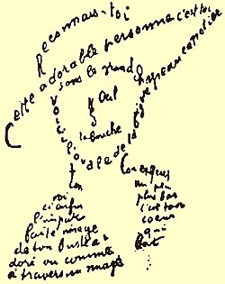

Ismael William Teeluck

Je suis un passionné de poésie mais aussi d'arts Martiaux. Malgré l'opposition de ces deux milieux, mon expérience a fait que j'ai su avec le temps tirer parti du meilleur de ces deux disciplines.
La Boxe Thaïlandaise
Pour moi la boxe est un mélange de stratégie, de force mentale mais aussi de self-control. Les deux choses les plus importantes que m'ont appris la boxe seraient : Ne jamais baisser les bras et de toujours repousser ses limites.
L'art oratoire
Je me passionne pour l'art de l'éloquence.
"Le meilleur du talent de l'orateur lui vient de la foule ou de l'assemblée. Pour que l'orateur soit grand et puissant, il faut que l'auditoire fasse la moitié du chemin." - Victor Hugo.
La poésie
Je me passionne pour la poésie.
"La poésie est cette musique que tout homme porte en soi." - William Shakespeare.